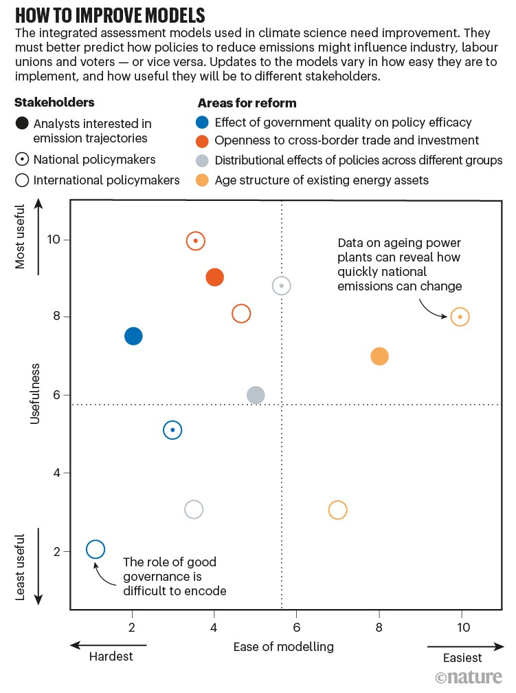
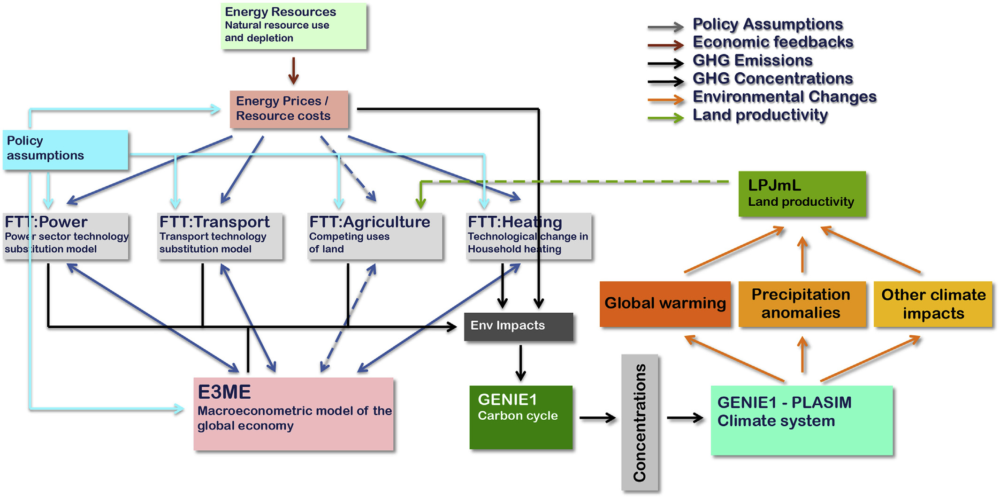

2 Climate Models
Overview text on selected Climate Models
2.1 University of Chicago
2.2 Mental Picture of Greenhouse Effect
Benestad
The popular picture of the greenhouse effect emphasises the radiation transfer but fails to explain the observed climate change.
The earth’s climate is constrained by well-known and elementary physical princi- ples, such as energy balance, flow, and conservation. Green- house gases affect the atmospheric optical depth for infrared radiation, and increased opacity implies higher altitude from which earth’s equivalent bulk heat loss takes place. Such an increase is seen in the reanalyses, and the outgoing long- wave radiation has become more diffuse over time, consistent with an increased influence of greenhouse gases on the vertical energy flow from the surface to the top of the atmosphere. The reanalyses further imply increases in the overturning in the troposphere, consistent with a constant and continuous vertical energy flow. The increased overturning can explain a slowdown in the global warming, and the association between these aspects can be interpreted as an entanglement between the greenhouse effect and the hydrological cycle, where reduced energy transfer associated with increased opacity is compensated by tropospheric overturning activity.
William Kininmonth’s ‘rethink’ on the greenhouse effect for The Global Warming Policy Foundation. He made some rather strange claims, such as that the Intergovernmental Panel on Climate Change (IPCC) allegedly should have forgotten that the earth is a sphere because “most absorption of solar radiation takes place over the tropics, while there is excess emission of longwave radiation to space over higher latitudes”.
Kininmonth’s calculations are based on wrong assumptions. When looking at the effect of changes in greenhouse gases, one must look at how their forcing corresponds to the energy balance at the top of the atmosphere. But Kininmonth instead looks at the energy balance at the surface where a lot of other things also happen, and where both tangible and latent energy flows are present and make everything more complicated.
It is easier to deal with the balance at the top of the atmosphere or use a simplified description that includes convection and radiation.
Another weak point is Kininmonth’s assumption of the water vapour being constant and at same concentrations as in the tropics over the whole globe. Focusing on the tropics easily gives too high values for water vapour if applied to the whole planet.
Another surprising claim that Kininmonth made was that ocean currents are the only plausible explanation for the warming of the tropical reservoir, because he somehow thinks that there has been a reduction in the transport of heat to higher latitudes due to a mysterious slow down of ocean currents. It is easy to check trends in sea surface temperatures and look for signs that heat transport towards higher latitudes has weakened. Such a hypothetical slowdown would suggest weaker ocean surface warming in the high latitudes, which is not supported by data.
Benestad (2022) New misguided interpretations of the greenhouse effect from William Kininmonth
Is it possible to provide a simple description that is physically meaningful and more sophisticated than the ‘blanket around earth’ concept?
The starting point was to look at the bulk – the average – heat radiation and the total energy flow. I searched the publications back in time, and found a paper on the greenhouse effect from 1931 by the American physicist Edward Olson Hulburt (1890-1982) that provided a nice description. The greenhouse effect involves more than just radiation. Convection also plays a crucial role.
How does the understanding from 1931 stand up in the modern times? I evaluated the old model with modern state-of-the-art data: reanalyses and satellite observations.
With an increased greenhouse effect, the optical depth increases. Hence, one would expect that earth’s heat loss (also known as the outgoing longwave radiation, OLR) becomes more diffuse and less similar to the temperature pattern at the surface.
An analysis of spatial correlation between heat radiation estimated for the surface temperatures and that at the top of the atmosphere suggests that the OLR has become more diffuse over time.
The depth in the atmosphere from which the earth’s heat loss to space takes place is often referred to as the emission height. For simplicity, we can assume that the emission height is where the temperature is 254K in order for the associated black body radiation to match the incoming flow of energy from the sun.
Additionally, as the infrared light which makes up the OLR is subject to more absorption with higher concentrations of greenhouse gases (Beer-Lambert’s law), the mean emission height for the OLR escaping out to space must increase as the atmosphere gets more opaque.
There has been an upward trend in the simple proxy for the emission height in the reanalyses. This trend seems to be consistent with the surface warming with the observed lapse rate (approximately -5K/km on a global scale). One caveat is, however, that trends in reanalyses may be misleading due to introduction of new observational instruments over time (Thorne & Vose, 2010).
Finally, the energy flow from the surface to the emission height must be the same as the total OLR emitted back to space, and if increased absorption inhibits the radiative flow between earth’s surface and the emission height, then it must be compensated by other means.
The energy flow is like the water in a river: it cannot just appear or disappear; it flows from place to place. In this case, the vertical energy flow is influenced by deep convection, which also plays a role in maintaining the lapse rate.
Benestad (2016) What is the best description of the greenhouse effect?
2.3 Political IAMs
Peng Memo
Similar to many economic tools developed decades ago, IAMs are built on an oversimplified logic: that people are rational optimizers of scarce resources. ‘Agents’ make decisions that maximize the benefits to a country or society2. Price adjustments — for example, a carbon tax — or constraints on polluting technologies alter the agents’ incentives, yielding changes in behaviour that alter economies and emissions4.
In reality, human choice is a darker brew of misperception and missed opportunity, constrained by others’ decisions. Researchers in sociology, psychology and organizational behaviour have long studied human behaviours. They explore why people stick with old, familiar technologies even when new ones are much superior, for example. This kind of research can also explain why the passion of mass movements, such as the global climate-strike movement, Fridays for Future, is hard to understand based on just individual costs and benefits, yet it can have powerful effects on policy.
To get IAMs to reflect social realities and possibilities, one should look to the field of political economy. Eight political economy insights
Data improve models’ relevance to policy and investment choices.
• Access to capital can be constrained by risk-averse investors who fear unpredictable changes in policy, hampering low-carbon energy transitions.
• The design and type of a policy instrument, such as whether to subsidize green technologies or tax polluting industries, can be influenced by which interest groups are mobilized.
• Carbon lock-in and stranding of fossil-based energy assets might limit the degree to which emissions can deviate from their previous trajectory, without interventions that can weaken the power of incumbent polluters.
• Unequal costs and benefits of climate policies accrue to different economic, racial and religious groups, which can affect policies’ moral and political acceptability.
• Public opinion might facilitate stronger action to tackle climate change.
• Confidence in political institutions or lack of it can influence the public’s willingness to support actions that reduce emissions.
• Trade and investment policies can expand the markets for new green technology, leading to lower costs and more political support.
• Competence of government influences a state’s ability to intervene in markets, make choices and alter the cost of deploying capital.

Peng (2021) Climate policy models need to get real about people — here’s how
2.5 DICE Climate Model
If you enter the climatic conditions of Venus into the DICE integrated assessment model, the economy stills grows nicely and everyone lives happily ever after.
Independent of the normative assumptions of inequality aversion and time preferences, the Paris agreement constitutes the economically optimal policy pathway for the century. Authors claim they show this by incorporating a damage-cost curve reproducing the observed relation between temperature and economic growth into the integrated assessment model DICE.
Glanemann (2021) DICE Paris CBA (pdf)
2.5.1 The failure of Dice Economics
If there is one climate economist who is respected above all others, it’s William Nordhaus of Yale, who won the Econ Nobel in 2018 “for integrating climate change into long-run macroeconomic analysis.” The prize specifically cited Nordhaus’ creation of an “integrated assessment model” for analyzing the costs of climate change. The most famous of these is the DICE Model, used by the Environmental Protection Agency.
But the DICE Model, or at least the version we’ve been using for years, is obviously bananas.
For other economists look here
2.6 E3ME-FTT-GENIE
Mercure Abstract
A high degree of consensus exists in the climate sciences over the role that human interference with the atmosphere is playing in changing the climate. Following the Paris Agreement, a similar consensus exists in the policy community over the urgency of policy solutions to the climate problem. The context for climate policy is thus moving from agenda setting, which has now been mostly established, to impact assessment, in which we identify policy pathways to implement the Paris Agreement. Most integrated assessment models currently used to address the economic and technical feasibility of avoiding climate change are based on engineering perspectives with a normative systems optimisation philosophy, suitable for agenda setting, but unsuitable to assess the socio-economic impacts of realistic baskets of climate policies. Here, we introduce a fully descriptive, simulation-based integrated assessment model designed specifically to assess policies, formed by the combination of (1) a highly disaggregated macro- econometric simulation of the global economy based on time series regressions (E3ME), (2) a family of bottom-up evolutionary simulations of technology diffusion based on cross-sectional discrete choice models (FTT), and (3) a carbon cycle and atmosphere circulation model of intermediate complexity (GENIE). We use this combined model to create a detailed global and sectoral policy map and scenario that sets the economy on a pathway that achieves the goals of the Paris Agreement with >66% probability of not exceeding 2 C of global warming. We propose a blueprint for a new role for integrated assessment models in this upcoming policy assessment context.
Mecure Memo
The E3ME-FTT-GENIE 2 model is a simulation-based integrated assessment model that is fully descriptive, in which dynamical (time-dependent) human or natural behaviour is driven by empirically-determined dynamical relationships. At its core is the macroeconomic model E3ME, which represents aggregate human behaviour through a chosen set of econometric relationships that are regressed on the past 45 years of data and are projected 35 years into the future. The macroeconomics in the model determine total demand for manufactured products, services and energy car- riers. Meanwhile, technology diffusion in the FTT family of tech- nology modules determines changes in the environmental intensity of economic processes, including changes in amounts of energy required for transport, electricity generation and household heating. Since the development and diffusion of new technologies cannot be well modelled using time-series econometrics, cross- sectional datasets are used to parameterise choice models in FTT. Finally, greenhouse gas emissions are produced by the combustion of fuels and by other industrial processes, which interfere with the climate system. Natural non-renewable energy resources are modelled in detail with a dynamical depletion algorithm. And finally, to determine the climate impacts of chosen policies, E3ME- FTT global emissions are fed to the GENIE carbon cycle-climate system model of intermediate complexity. This enables, for instance, policy-makers to determine probabilistically whether or not climate targets are met.

Mercure (2018) Environmental impact assessment for climate change policy with the simulation-based integrated assessment model E3ME-FTT-GENIE (pdf)
Mercure Abstract
A key aim of climate policy is to progressively substitute renewables and energy efficiency for fossil fuel use. The associated rapid depreciation and replacement of fossil-fuel-related physical and natural capital entail a profound reorganization of indus- try value chains, international trade and geopolitics. Here we present evidence confirming that the transformation of energy systems is well under way, and we explore the economic and strategic implications of the emerging energy geography. We show specifically that, given the economic implications of the ongoing energy transformation, the framing of climate policy as economically detrimental to those pursuing it is a poor description of strategic incentives. Instead, a new climate policy incen- tives configuration emerges in which fossil fuel importers are better off decarbonizing, competitive fossil fuel exporters are better off flooding markets and uncompetitive fossil fuel producers—rather than benefitting from ‘free-riding’—suffer from their exposure to stranded assets and lack of investment in decarbonization technologies.
Mercure (2021) Reframing incentives for climate policy action (pdf)
2.7 EZ-Climate Model
Some text on EZClimate
2.8 FAIR Climate Model
The FAIR model satisfies all criteria set by the NAS for use in an SCC calculation. 22 Importantly, this model generates projections of future warming that are consistent with comprehensive, state- of-the-art models and it can be used to accurately characterize current best understanding of the uncertainty regarding the impact that an additional ton of CO 2 has on global mean surface temperature (GMST). Finally, FAIR is easily implemented and transparently documented, 23 and is already being used in updates of the SCC. 24
A key limitation of FAIR and other simple climate models is that they do not represent the change in global mean sea level rise (GMSL) due to a marginal change in emissions.
2.9 GCAM
Global Change Analysis Model
JGCRI is the home and primary development institution for the Global Change Analysis Model (GCAM), an integrated tool for exploring the dynamics of the coupled human-Earth system and the response of this system to global changes. GCAM is a global model that represents the behavior of, and interactions between five systems: the energy system, water, agriculture and land use, the economy, and the climate.
GCAM Analysis of COP26 Pledges
Over 100 nations have issued new commitments to reduce greenhouse gas emissions ahead of the United Nations Conference of the Parties, or COP26, currently underway in Glasgow.
A new analysis published today in the journal Science assessed those new pledges, or nationally determined commitments (NDCs), and how they could shape Earth’s climate. The authors of the study, from institutions led by the Pacific Northwest National Laboratory and including Imperial College London, find the latest NDCs could chart a course where limiting global warming to 2°C and under within this century is now significantly more likely.
Under pledges made at the 2015 Paris Agreement, the chances of limiting temperature change to below 2°C and 1.5°C above the average temperature before the industrial revolution by 2100 were 8 and 0 per cent, respectively.
Under the new pledges – if they are successfully fulfilled and reinforced with policies and measures of equal or greater ambition – the study’s authors estimate those chances now rise to 34 and 1.5 percent, respectively. If countries strike a more ambitious path beyond 2030, those probabilities become even more likely, rising to 60 and 11 percent, respectively.
Further, the chance of global temperatures rising above 4°C could be virtually eliminated. Under the 2015 pledges, the probability of such warming was more likely, at around 10 percent probability.
The researchers used an open-source model called the Global Change Analysis Model (GCAM) to simulate a spectrum of emissions scenarios.
Dubash Abstract
Discussions about climate mitigation tend to focus on the ambition of emission reduction targets or the prevalence, design, and stringency of climate policies. However, targets are more likely to translate to near-term action when backed by institutional machinery that guides policy development and implementation. Institutions also mediate the political interests that are often barriers to implementing targets and policies. Yet the study of domestic climate institutions is in its infancy, compared with the study of targets and policies. Existing governance literatures document the spread of climate laws (1, 2) and how climate policy-making depends on domestic political institutions (3–5). Yet these literatures shed less light on how states organize themselves internally to address climate change. To address this question, drawing on empirical case material summarized in table S1, we propose a systematic framework for the study of climate institutions. We lay out definitional categories for climate institutions, analyze how states address three core climate governance challenges—coordination, building consensus, and strategy development—and draw attention to how institutions and national political contexts influence and shape each other. Acontextual “best practice” notions of climate institutions are less useful than an understanding of how institutions evolve over time through interaction with national politics.
Dubash (2021) National climate institutions complement targets and policies (Science)
2.10 Global Calculator
Used by Kuhnhenn - STS - Heinrch Böll Stiftung